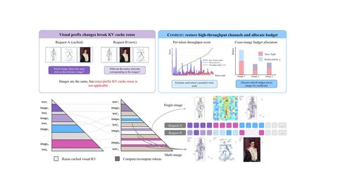
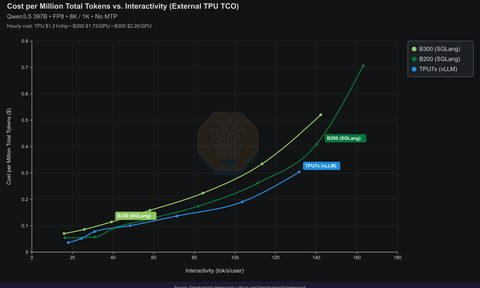
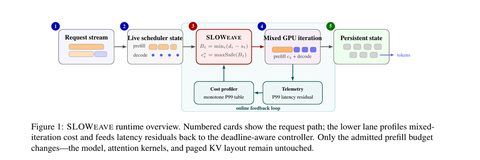

← 首页
AI 推理资讯 · 2026年9月
多模态大模型推理服务 · 每 2 小时一期简报 ＋ 中文深读笔记
← 最新资讯
📅 2026 年归档
2026-09-09
深读
09-09 14:50
深读 · SGLang v0.5.19：统一 Radix Tree 转正 + EPD 重构 + mxfp8 KV 传输
> 原文：Release v0.5.19 · sgl-project/sglang（786 个 PR，214 位贡献者）
深读

09-09 11:08
深读 · CONDUIT：视觉语言模型的统一 KV Cache 复用框架
> 论文：CONDUIT: A Unified Residual-Stream Restoration Framework for KV Cache Reuse in Vision
深读
09-09 11:08
深读 · DeepSeek-V3.2-Exp：稀疏注意力把长上下文推理成本砍掉 6–7 倍
> 新闻：DeepSeek-V3.2-Exp 发布（MIT 协议开源）
深读

09-09 11:08
深读 · SemiAnalysis：Google TPU 推理外部化实战调优笔记（InferenceX）
> 文章：TPU Inference Externalization Full Steam Ahead - InferenceX
深读

09-09 11:08
深读 · SLOWeave：给 chunked prefill 装上"自适应油门"
> 论文：Deadline-Aware Adaptive Prefill Chunking for Efficient Large Language Model Serving
← 上一页
·
第 5 / 5 页